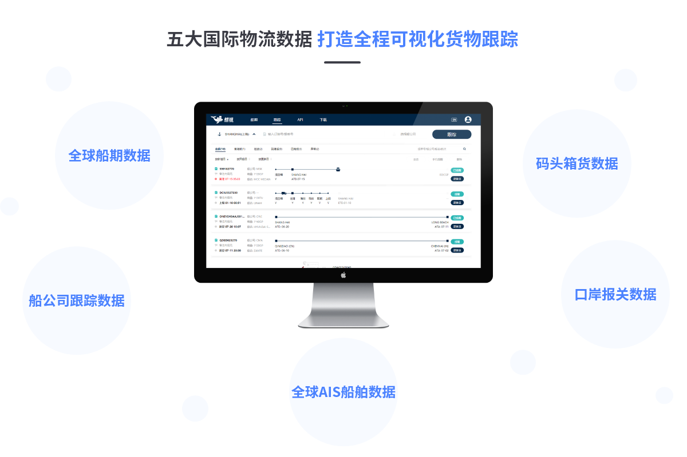
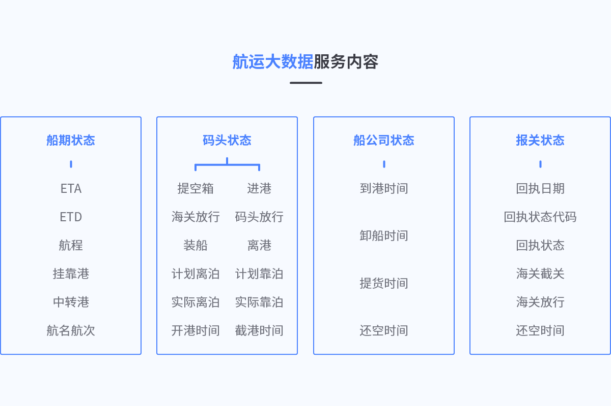
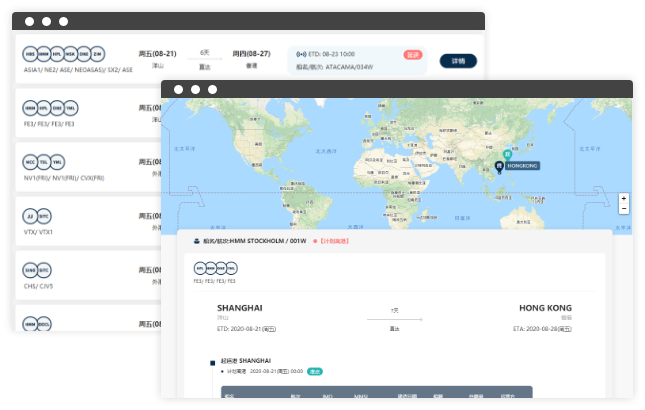
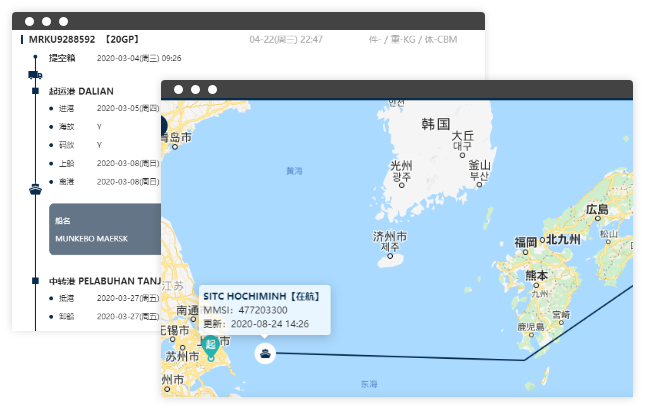
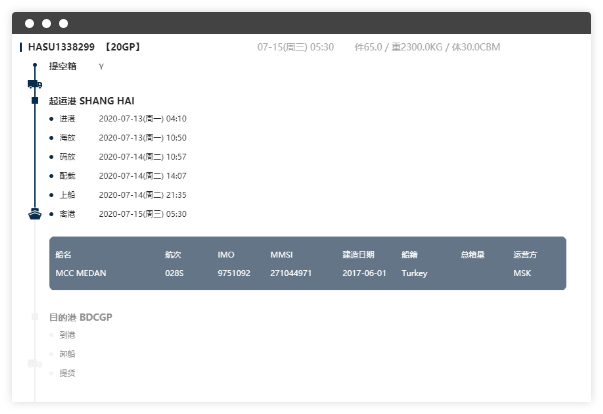
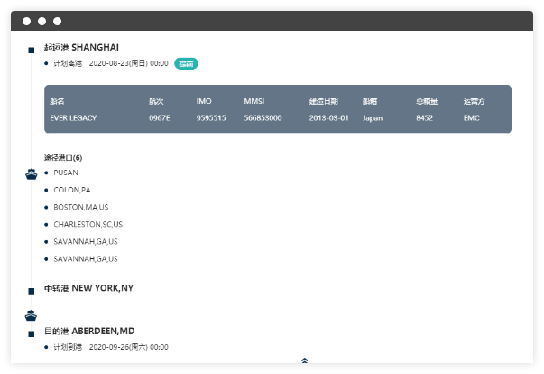
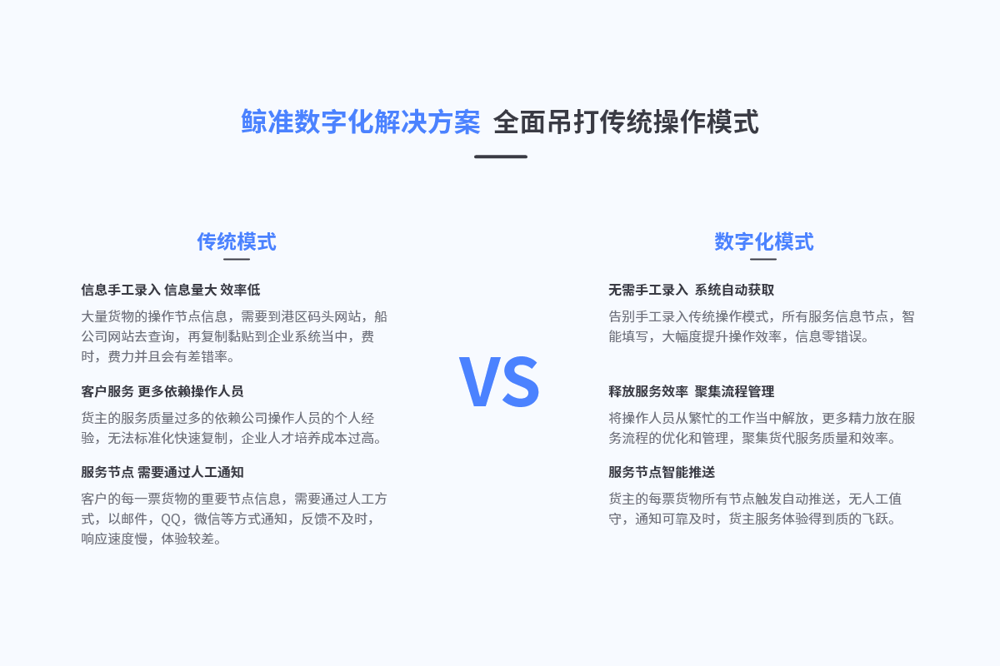
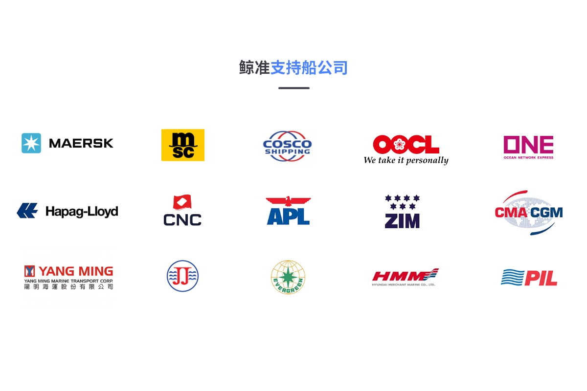

货物全程可视化解决方案货代百强都在使用
无缝对接海关、码头、船公司 力助企业实现数字化转型
航运大数据服务 引流数字化变革
-
数据自动化
全自动实时获取港区，码头
船公司船期及跟踪数据
-

准点率分析
根据船公司船名航次分析
准点率，晚点率
-
任务提醒
自动拆分每票货物的任务
提醒及通知，实时预警
-
微信推送
服务号，小程序跟踪节点
信息查询，自动推送
-
停航/新航线分析
及时获取船公司停航及
新开航线信息
-
地图AIS定位
可集成地图AIS定位
实时获取船舶实时位置
-
船期运价
船期匹配运价，快速锁定
仓位，提升订舱效率
-
可视化供应链
打造开放式货主可视化操
作可视界面，服务效果一目了解

五大国际物流数据打造全程可视化货物跟踪
全球船期数据
船公司跟踪数据
全球AIS船舶数据
口岸报关数据
码头箱货数据

航运大数据服务内容
-
船期状态
ETAETD航程挂靠港中转港航名航次 -
码头状态
提空箱进港海关放行码头放行装船离港计划离泊计划靠泊实际离泊实际靠泊开港时间截港时间 -
船公司状态
到港时间卸船时间提货时间还空时间 -
报关状态
回执日期回执状态代码回执状态海关截关海关放行还空时间
智能化协同操作 效率相比传统可提升30%以上
- 船期智能预警
- 全程货物跟踪
- 全国口岸报关状态

智能化船期 全节点预警
鲸准全球船期整合船公司官方船期表，同时结合港区船舶计
划及AIS船舶定位，可实现对全球各大船公司船期变化的精准
跟踪及提醒
1 动态船期
2 港区作业计划
3 船舶AIS定位
免费使用中国-全球船期 及时动态更新
实时与船公司最新发布的官网船期同步，根据静态船期为基
础，对船期的延误，空班，提前，加班船等状态进行及时预
警通知，实时掌控各大船公司船期的最新变动情况。
1 共舱信息
2 船期延误
3 空班/加班船
免费使用

免费使用
全球港口集装箱跟踪
提供MSK,MSC,CMA,COSCO等40家船公司全球集装箱动态跟
踪，可根据提单号便可实现船公司货物节点状态跟踪，结合
AIS船舶定位实现可视化货物追踪服务。
1.提空箱
3.中转港状态
5.提货
2.上船
4.到港/卸船
6.还空



鲸准数字化解决方案全面吊打传统操作模式
传统模式
信息手工录入 信息量大 效率低
大量货物的操作节点信息，需要到港区码头网站，船公司网站去查询，再复制黏贴到企业系统当中，费时，费力并且会有差错率。
客户服务 更多依赖操作人员
货主的服务质量过多的依赖公司操作人员的个人经验，无法标准化快速复制，企业人才培养成本过高。
服务节点 需要通过人工通知
客户的每一票货物的重要节点信息，需要通过人工方式，以邮件，QQ，微信等方式通知，反馈不及时，响应速度慢，体验较差。
数字化模式
无需手工录入 系统自动获取
告别手工录入传统操作模式，所有服务信息节点，智能填写，大幅度提升操作效率，信息零错误。
释放服务效率 聚集流程管理
将操作人员从繁忙的工作当中解放，更多精力放在服务流程的优化和管理，聚集货代服务质量和效率。
服务节点智能推送
货主的每票货物所有节点触发自动推送，无人工值守，通知可靠及时，货主服务体验得到质的飞跃。

鲸准合作船公司
MSK
马士基
MSC
地中海航运
COSCO
中远海
OOCL
东方海外
CMA
法国达飞
APL
美国总统
HPL
赫伯罗特
ONE
海洋网联
EMC
长荣海运
YML
阳明
HMM
现代
PIL
太平
ZIM
以星
SAF
南非轮船
HBS
汉堡南美
WHL
万海
KMTC
高丽
ESL
阿联酋航运
JINJIANG
锦江
CNC
正利
SINOKOR
长锦
STX
世腾船务
SML
森罗
SITC
新海丰
RCL
宏海箱运
ACI
亚利安莎
CCNI
南美智利
GSL
金星轮船
HAL
兴亚
IAL
运达
MARI
玛丽亚那
NGPL
太古船务
MCC
穆勒航运
USL
美国轮船
ATL
安通物流
CKL
天敬
DEL
达贸轮船
KKC
神原汽船
KLINE
川崎汽船
MATS
美森轮船
MOL
商船三井
NSS
南星海运
NYK
日本邮船
PCL
泛洲海运
SINO
中外运
TSL
德翔海运
ZSH
中谷海运
NOSCO
宁波远洋